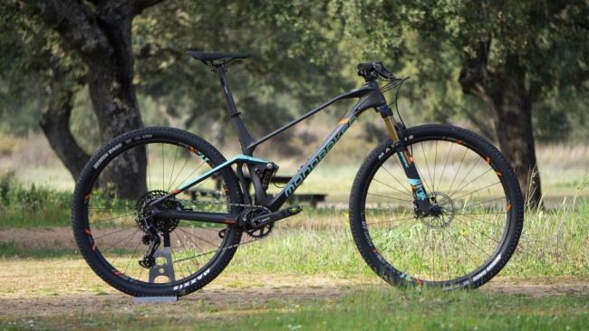
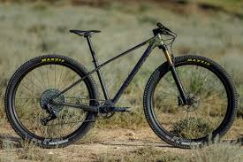
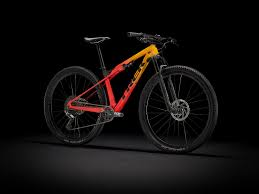

Introduccion
Este tipo de bicicletas, son bicicletas especificas para rodar por terrenos montañosos como puden ser tanto caminos como sendas,
en este apartado os enseñamos las bicicletas que para nosotros son las bicicletas de mas gama del mercado, tanto por su geometria como
tambien por sus componentes.
Especificaciones

| Mondraker Podium r Carbon |
| Marca |
Mondraker |
| Modelo |
Podium r carbon |
| Material |
Carbono |
| Precio |
14.500€ |

| Orbea alma omx 2021 |
| Marca |
Orbea |
| Modelo |
Alma omx 2021 |
| Material |
Carbono |
| Precio |
6.000€ |

| Trek supercaliber 2021 |
| Marca |
Trek |
| Modelo |
Supercaliber 2021 |
| Material |
Carbono |
| Precio |
7.500€ |
Estas son las bicicletas
| Mondraker Podium r Carbon | |
|
Orbea alma omx 2021 | |
|
Trek supercaliber 2021 |
Imagen de la mejor bici